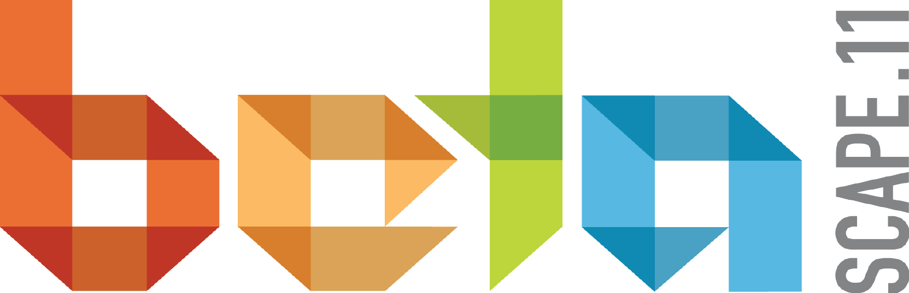

betascape
Betascape 2011 is done & done.
We'll be back in 2012. We are planning a bunch of awesome TBA events. Share your info and we'll keep you in the loop.
Come to free events on Friday and register for Saturday and Sunday events
Tickets include lectures and workshops on Saturday and CreateCamp on Sunday plus breakfast and lunch both days.Betascape is a weekend of Art and Technology in Baltimore MD. Come learn, connect, and create something with other artists, technologists, and everyone in between.
| Friday Night | Outlet Baltimore Relaunch Party, 6pm @ Windup Space. |
| Friday Night | Literature Party by Publishing Genius, 8pm @ Metro Gallery. |
| Saturday Day | Lectures, conversations and workshops. AFKFest 2011 Car Computer Festival & Speaker Series |
| Saturday Night | Station North Block Party from 6pm featuring bands Baltimare and Bobby E. Lee & The Sympathizers and Baltimore's Food Trucks. Byte Nyte! Live 8-bit music and visuals at the Hour Haus. |
| Sunday | CreateCamp is a mini-hackathon, with to get people experimenting and collaborating after spending the day before learning. |
Who's going to be there?
Sponsors
Thanks to our Premier Sponsor The Robert W. Deutsch Foundation

Partners
Media Partners

Friends of Betascape
- UMBC
- Hopkins Digital Media Lab
- High Zero
- BMA
- Baltimore Node
- Load of Fun
- Joe Squared
- GBTC